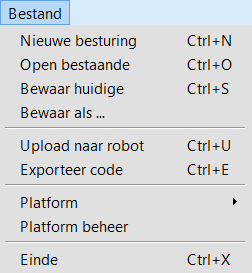
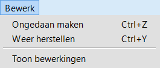
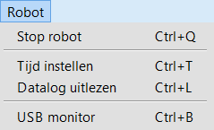
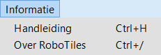

RoboTile menu´s
Het bestand-menu

Nieuwe besturing
Hiermee maak je een nieuw programma voor een robot.
Wanneer je nog met een ander programma bezig was, wordt je gevraagd of je dat eerst wilt bewaren.
Open bestaande
Hiermee ga je verder met een programma dat bewaard hebt.
Een opgeslagen programma van ProtoIt herken je aan de bestandextentie ’rtp’.
Behalve het rtp-bestand vind je een submap met dezelfde naam als het rtp-bestand.
Het rtp-bestand heeft de bestanden in de submap nodig.
Bewaar huidige
Een programma van ProtoIt wordt in twee delen opgeslagen. Het hoofdbestand heeft als extentie ’rtp’.
Je wordt gevraagd om de naam voor dit bestand op te geven. Behalve het rtp-bestand maakt ProtoIt nog een submap aan met dezelfde naam.
In de submap komen de ProtoIt Device-bestanden (rtd-bestanden) te staan, die door het programma in gebruik zijn.
Gevorderde gebruikers kunnen daar de rtd-bestanden aanpassen, terwijl de originele bestanden van ProtoIt ongewijzigd blijven.
Bewaar als ...
Hiermee kun je een kopie van je programma opslaan onder een andere naam.
Ook nu weer bewaart ProtoIt een rtp-bestand en een submap met dezelfde naam, waar zich de rtd-bestanden in bevinden.
Upload naar robot
 Hoewel hiervoor een menu-optie aanwezig is, vind je ook in het snelmenu een knop voor het uploaden:
Hoewel hiervoor een menu-optie aanwezig is, vind je ook in het snelmenu een knop voor het uploaden:
Beide mogelijkheden werken hetzelfde. Zorg ervoor dat de robot aan staat voordat je begint met uploaden.
Op sommige platforms (Arduino, Raspberry) start een programma na het uploaden automatisch. Op andere platforms (Lego Mindstorms) moet je zelf het programma starten.
Exporteer code
Voordat ProtoIt een programma naar een robot upload, maakt het eerst een code-bestand in C/C++ aan. De gehanteerde code is afhankelijk van het platform.
Wie deze code wil inspecteren of er in een IDE-omgeving verder aan wil werken, kan de code exporteren onder een zelfgekozen naam.
Platform
Wanneer ProtoIt start, wordt je gevraagd om een platform te kiezen.
Zolang je niet aan een programma bent begonnen, kun je het platform later nog wijzigen.
Ook direct na de menu-optie Nieuwe besturing kun je weer een ander platform kiezen.
Platform beheer
Hier vind je een overzicht van alle platforms, modellen, apparaten en functies, die tot je beschikking staan.
Je kunt items importeren en verwijderen. Dit wordt uitgebreid behandeld bij het onderwerp Platforms beheren.
Einde
Hiermee wordt ProtoIt beëindigd. Je wordt gevraagd om het programma waar je mee bezig was op te slaan.
Het bewerk-menu

Ongedaan maken
Alle wijzigingen, vanaf het moment dat je aan een nieuw programma begint of een bestaand programma hebt geopend, kun je ongedaan maken.
Het ongedaan maken gebeurt in de omgekeerde volgorde waarin de handelingen hebben plaatsgevonden. De sneltoets Ctrl-Z werkt op dezelfde manier.
Let op: Wanneer het ongedaan maken van een handeling niet in de huidige programmastap plaats vindt, zal ProtoIt naar de betreffende programmastap omschakelen.
Weer herstellen
Als je een wijziging per ongeluk ongedaan hebt gemaakt, kun je deze weer herstellen.
Het herstellen gebeurt in de volgorde waarin de handelingen oorspronkelijk plaatsvonden. De sneltoets Ctrl-Y werkt op dezelfde manier.
Let op: Wanneer het herstellen van een handeling niet op de huidige programmastap plaats vindt, zal ProtoIt naar de betreffende programmastap omschakelen.
Toon bewerkingen
Nadat je aan een nieuw programma bent begonnen of een bestaand programma hebt geopend, houdt ProtoIt alle wijzigingen aan het programma bij.
Daarvan roep je een rapport op met de optie Toon bewerkingen.
Dat is handig als je terug wilt vinden wat je precies veranderd hebt tijdens het programmeren.
Het robot-menu

LET OP! Het robot-menu of sommige opties ervan zijn niet voor ieder platform beschikbaar.
Stop robot
Stopt het programma in de robot. De robot moet worden gereset om het programma weer te starten.
Tijd instellen
Stelt de Klok-functie in op de huidige tijd.
De Klok-functie moet dan wel in het programma van de robot zijn opgenomen.
Datalog uitlezen
Vraagt de gegevens van de het Datalogger-apparaat op.
Het Datalogger-apparaat moet dan wel in het programma van de robot zijn opgenomen.
USB monitor
Maakt vanuit ProtoIt een ´live´-verbinding met je programma.
Zo kun je in ProtoIt maximaal vier signaal-waardes uit je programma volgen.
Het Usb Monitor-apparaat moet dan wel in het programma van de robot zijn opgenomen.
Het informatie-menu

Handleiding
Hiermee wordt deze handleiding opgeroepen.
Over ProtoIt
Hier vind je informatie over jouw versie van ProtoIt en waarom ProtoIt is gemaakt.